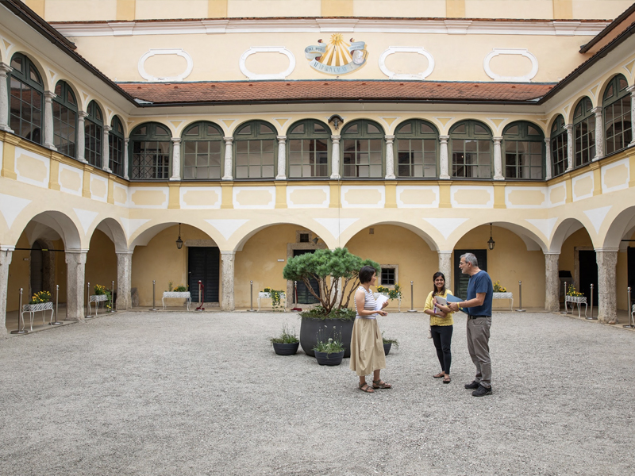
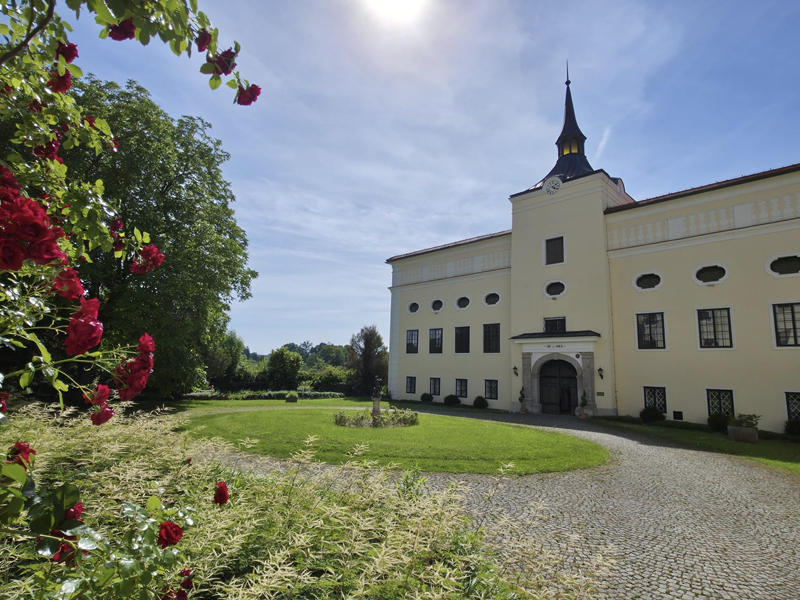
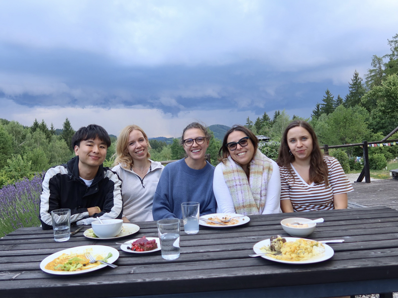
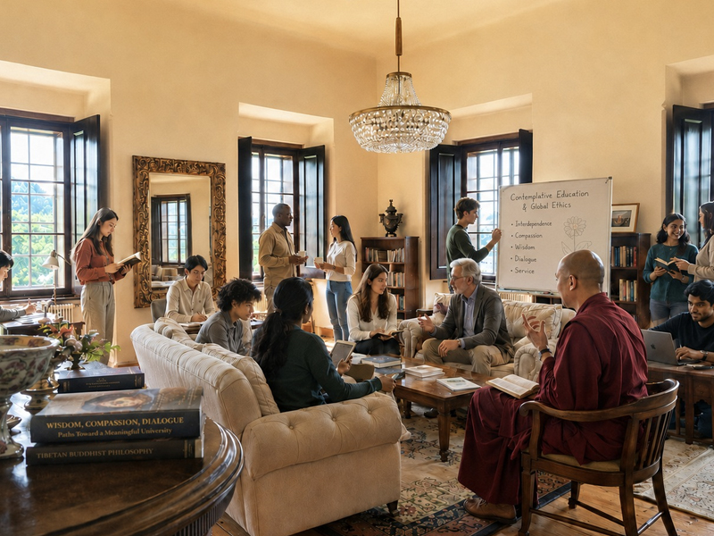

The Vision
Compassion guided by the wisdom of interdependence.
Built on the conviction that who you are and what you do are not separate domains.

The moment.
As knowledge becomes instant and abundant, the value of an education can no longer rest on the mere acquisition of knowledge or technical expertise. What matters now more than ever is wisdom: the ability to cultivate insight into the complexities of interdependent systems to uncover opportunities for growth and global flourishing. To face the challenges of the future, we must cultivate the discernment to know what is worth doing, the presence to hold complexity, and the wisdom to act with care.
Most universities promise to form the whole person, then leave it to professors trained only in their subjects. Here, the teachers guiding your formation are masters of it — teachers from a living contemplative tradition, who are also rigorous scholars.
Get to know our Founders
The outcome.
Here, academic rigor lives beside contemplative practice. Grounded in Buddhist contemplative philosophy and open to all wisdom traditions, the university produces something a conventional education cannot: graduates who leave not only with expertise, but who seek to serve the world through the understanding that interdependence is the fundamental nature of reality. Nothing exists in isolation.
When that recognition moves from intellectual understanding into lived experience, it changes how a person acts, how they decide, and how they relate to the people and systems around them.
Read more about our academic programs
The change we bring.
We aim to train and inspire graduates that carry compassionate wisdom into the world’s institutions, systems, and communities that need it most. We believe that we have an opportunity to shape our future by combining Eastern contemplative insight and Western science.
Beneath our two academic tracks runs a single philosophical foundation — the insight that all things exist in a complex web of interdependence, where no single identity stands in isolation from any other. This is not a sectarian claim. It is a description of how reality works, arrived at independently by millennia of contemplative inquiry and by the modern sciences of ecology, complex systems, and consciousness.

Part of a Larger Vision
The Bodhi Project
Kremsegg is the first and load-bearing expression of something larger. The Bodhi Project is a long-term undertaking to bring contemplative wisdom and rigorous inquiry together across the whole arc of a human life — a university for adult formation, a school for the young, and the Kremsegg Cultural Programs that open the estate to the wider community.
The project holds two non-negotiable commitments: that everything it does be world-class and that it be built to last — sustainable, in every sense, for the generations to come. Its vision is of graduates formed in both academic rigor and inward development; of leaders who emerge through the recognition of their communities and carry dignity, compassion, and discernment into the systems of their time; of Eastern contemplative wisdom and Western science joining in a profound collaboration.
The university is where that vision begins.